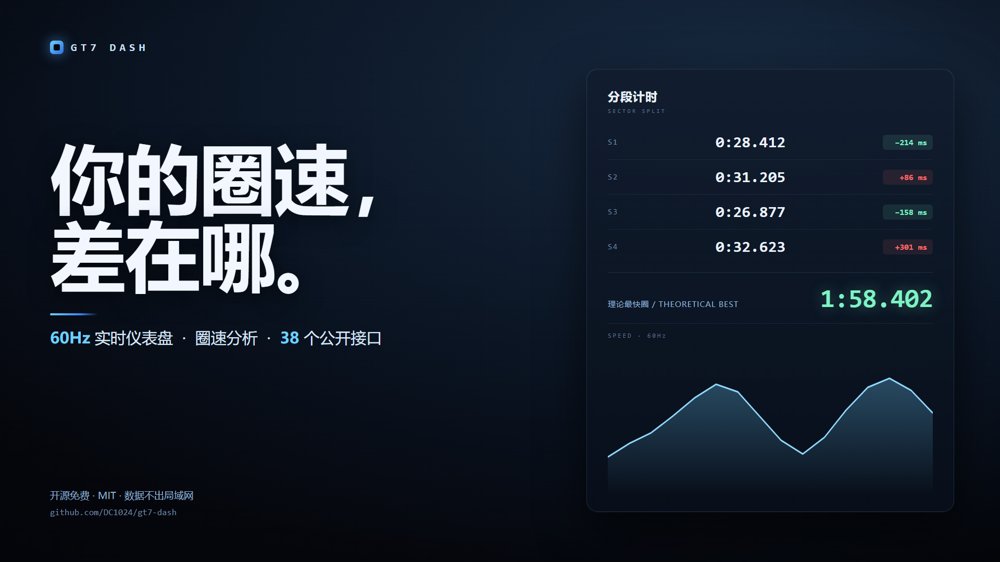

AI 旁白、零人工剪辑——仪表盘与副驾实际跑起来是什么样。

全部卡片可拖拽排序、隐藏、多套布局保存——按你的屏幕定制。
仿赛车仪表的小球随 G 值实时摇晃：刹车向前、过弯向侧， 弹簧动画平滑跟随，一眼读懂抓地力状态。
GT7 不下发赛道名，于是按轨迹的几何指纹自己认：同源场次指纹距离
0.006、不同赛道 0.24，差 40 倍。/tracks 页画出每条赛道
的形状让你核对，改名后同赛道所有场次一起生效。
整车轨迹可在「按踏板着色」与「按 G 力着色」之间切换，圈号就地切不用 刷新页面——刹车粉→红、油门青→绿，G 力按合成值铺蓝→绿→橙→红。
历史场次与实时界面显示「品牌 + 车名 + 赛事组别徽章」，如
Porsche 918 Spyder '13 Gr.X、Suzuki Escudo
Gr.X。品牌与组别来自内置的社区车型表，街车自动不显示徽章。
整场横向/纵向 G 散点铺开，外边界就是轮胎极限—— 看看你到底用了几成抓地力。
把一圈切成 N 段逐段对比你自己的最好成绩，拼出「理论最快圈」， 哪一段在丢时间一目了然。
走线偏差给出相对参考圈的逐米横向偏移热力图；滑移检测由四轮角速度 自标定轮胎半径，识别空转与抱死。
9 类事件自动打点：打滑 / 碰撞 / 极限刹车 / 出界 / 轮胎滥用 / 大油门出弯 / 超车·被超 / 进站 / 最快圈。 集锦按「置信度 × 类型权重」排序，直接给出可喂 ffmpeg 的起止时间， 剪视频不用自己找点。
全部来自遥测，不需要截图识别。名次用协议里的 0x84
——它在比赛中就是当前名次（社区文档写成"发车位"是错的，14 场
真实数据验证过）；进站靠"油量上升"强判据 + "长时间低速"弱判据，
并且会区分「暂停」和「维修区通行」；最快圈用官方
last_lap_ms，不是自己积分。
全通道时序曲线带十字光标读数、逐帧原始数据表可翻页， 按整场或单圈导出 CSV（带 BOM，Excel 不乱码）。
进赛道自动开始、回菜单自动结束；老场次自动压成无损
.jsonl.gz 省 95% 空间。回收站里的场次
点进去就能看摘要和轨迹，确认没用再删。
含新「座舱」主题（近黑底＋电光蓝，副屏仪表向）。卡片可拖拽排序、 隐藏、半宽整行，多套布局保存切换。
GT7 不广播胎压、胎温、磨损，也不给赛道名和 BoP —— 这些是协议层
的硬限制，不是没做。但社区实测的各胎种寿命圈数、湿地胎特性
做成了参考表（/api/v1/tyres），赛道页给标注过的赛道
打 BoP 档位徽章，一眼看出这台车在这条道上被压了多少。
打滑 G 值、进站限速、名次稳定时长……9 个常用阈值在事件卡里直接改， 不用改源码重启。改完缓存自动失效，下次展开按新阈值重算； 一键恢复默认。不同车型/赛道的判据差别很大，锁死在作者的默认值上 是不合理的。
实时 / 场次 / 逐帧与分析 / 赛道 / 回收站 / 设置全覆盖， 带 CORS、字段与单位全部写进文档，版本化承诺只加不改。
Docker 单镜像，无外部服务，数据全部留在本地。
带 CORS 的 REST 接口，字段与单位全部写进文档，版本化承诺只加不改。
共 38 个端点，完整字段与单位说明见
API文档.md，
或直接访问运行中的 /api/v1/docs。
同一份遥测，多一个「赛道工程师」在该说话的时候说一句。
独立进程、独立仓库，纯本地判断、零云依赖。盯着同一份遥测， 用浏览器语音念出来——「1.5 秒后重刹区，参考最低 92」这种。 仪表盘实时页会多出一张卡片显示它的状态与播报内容。
所有判断都在本地完成（硬实时 <300ms 绝不依赖网络）， 只有「这句话怎么说」可以选填一个云模型润色；没填就走本地模板， 没 key 就完全不外呼。
教练读本服务的公开 v1（/api/v1/live、
/sessions/<f>/profile），卡片读教练的
/api/v1/coach/state。教练没启动时仪表盘照常工作。